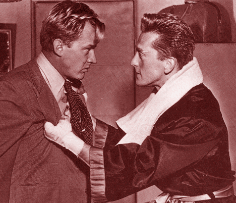
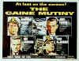
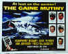
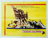
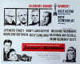
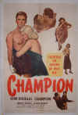
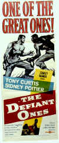
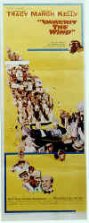
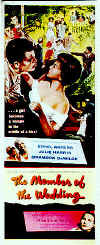
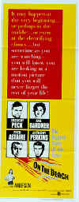

Stanley Kramer (1913-2001)
It would be remiss not to mention the death of Stanley Kramer. Though he did not make a film for the last twenty off years of his life and his last films met with a dismal reception at best, Kramer was a filmmaking force from the late forties through the early seventies. Kramer began on the producing side of the business, developing for the screen some truly great films. One of my favorites, Champion (1949), gave Kirk Douglas one of his best roles as boxer Midge Kelly. Kramer was often associated with presenting social issues on film, though I believe he only wanted to make good films. The 1949 Home of the Brave was a pretty powerful drama of racism in the military. Classy productions like Death of a Salesman and Cyrano de Bergerac were brought to the screen by producer Kramer. The classic western High Noon was a Stanley Kramer production. Kramer worked with many great actors. Under the Kramer producing banner, Humphrey Bogart was nominated for Best Actor as the infamous Captain Queeq in The Caine Mutiny. It was the screens first memorable use of Chinese Healthy Balls. "It's like any other business, only here the blood shows," Kirk Douglas intones as Midge Kelly to his brother in Champion. Stanley Kramer might have said the same thing about the film business. |
Kramer began directing his own films in
1955 with the drama Not as a Stranger starring Robert Mitchum. He followed that with the
pretty stiff "action" film The Pride and the Passion, a high profile production in
1957 starring Cary Grant, Sophia Loren and Frank Sinatra. It's all about a canon. All I can say is,
what a set of canon balls. Kramer also directed and produced the fine drama The Defiant Ones
starring Sidney Poitier and Tony Curtis as a couple of escaped criminals chained to each other. On
the Beach, Inherit the Wind and Judgment at Nuremberg all bore the stamp of
Kramer class. Guess Who's Coming to Dinner was a controversial effort starring Spencer
Tracy, Katharine Hepburn and Sidney Poitier, once again taking on social issues. Perhaps Kramer's
most ambitious film is an ode to comedians, the madcap, wild comedy It's a Mad, Mad, Mad, Mad
World. Starring Spencer Tracy and a host of funnymen, Mad is an over the top production
featuring a cross country treasure hunt. Though often uneven, it's a cultural treasure.
The likes of Stanley Kramer will be
missed.
 |
 |
 |
 |
 |
 |
 |
||
 |
 |
 |
 |
 |
|


The home of John Tisch's invaluable Poster Price Almanac. Every serious poster collector
uses the Almanac as a reference.

The publication you can't do without if your interested in Movie Posters.
Bruce Hershenson Move Posters

Bruce Hershenson has been running
successful movie poster auctions for a number of years, most notably for Christies. His site
includes many images and a huge variety of posters for sales from his periodic
catalogs.
Choko
Movie Posters

The popular Paris movie poster store
makes it's way to the Internet with an outstanding selection of French Movie Posters. Many
beautiful images on display in a searchable data base.

Classic Images on classic films, featuring news, reviews, obituaries, film convention reports,
and detailed articles on film people, from the most famous to the most obscure

Easy to use interface with lots of vintage posters for sale.

In the Mine are movie posters, autographs of your favorite stars,
original movie heralds and more!
 Across
the Bridge Posters won't sell you the Brooklyn
Bridge, but have a look at their selection of movie posters.
Across
the Bridge Posters won't sell you the Brooklyn
Bridge, but have a look at their selection of movie posters.
Avid-Collector Posters

Great selection of big foreign paper, plus the home of J. Fields linen
service.
Umberto Passini Online

Vintage & Contemporary Film Poster Art. Umberto has developed a fine Internet
reputation as reliable and honest. Nice posters too!